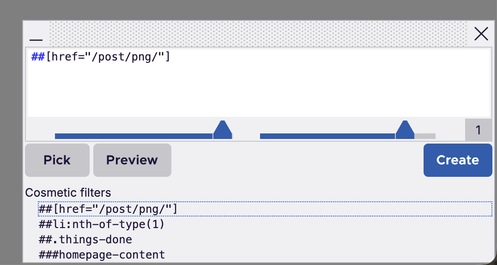
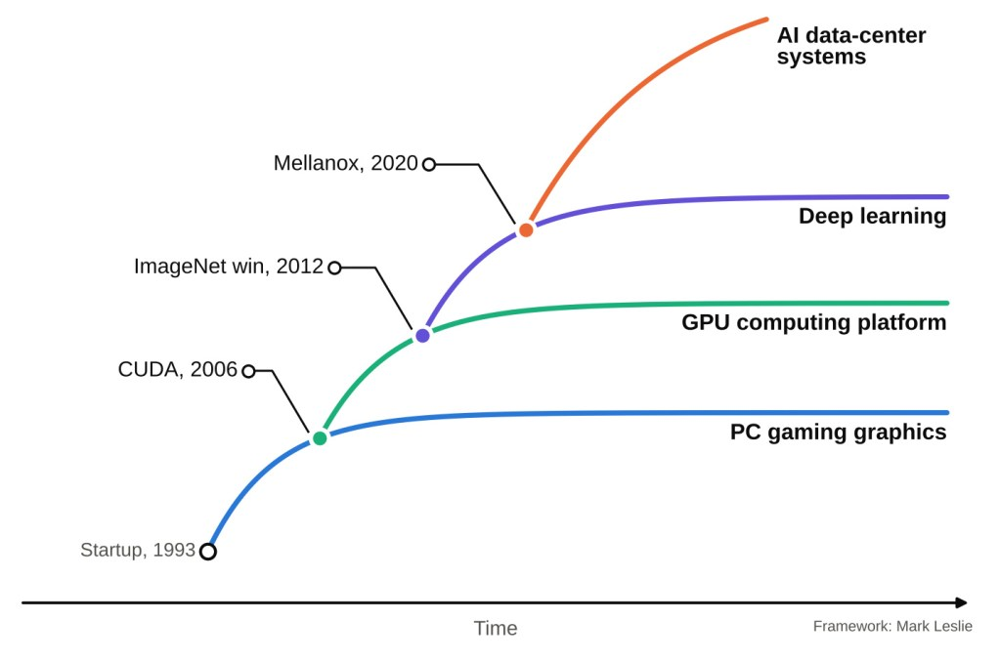
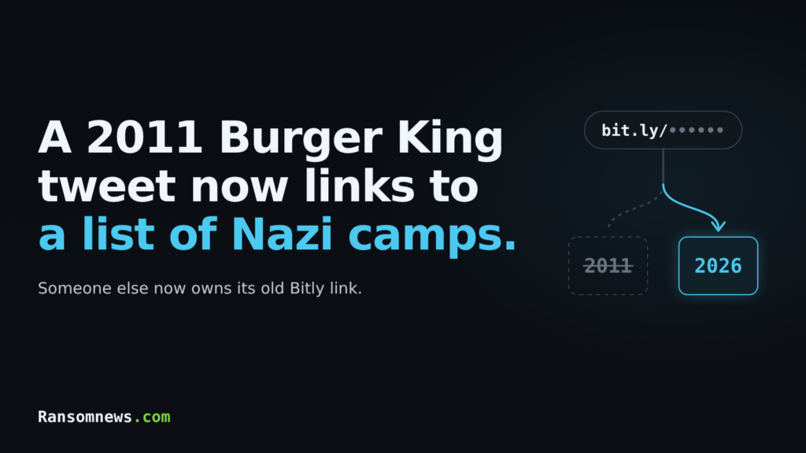
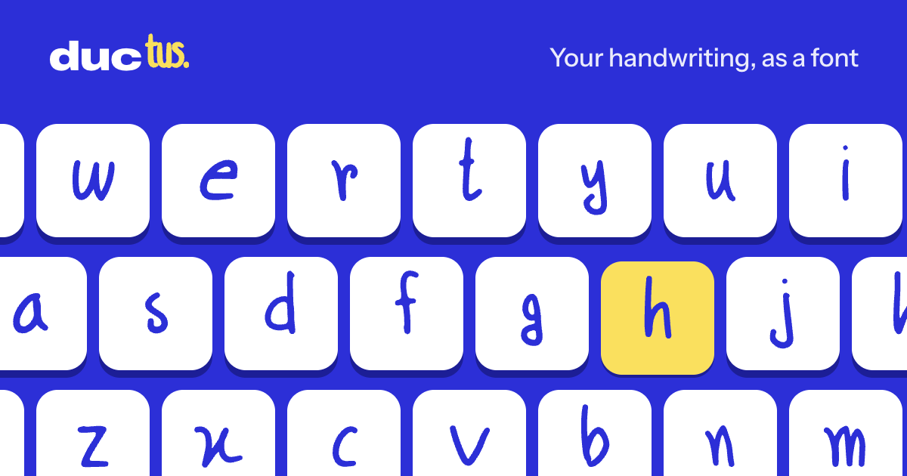
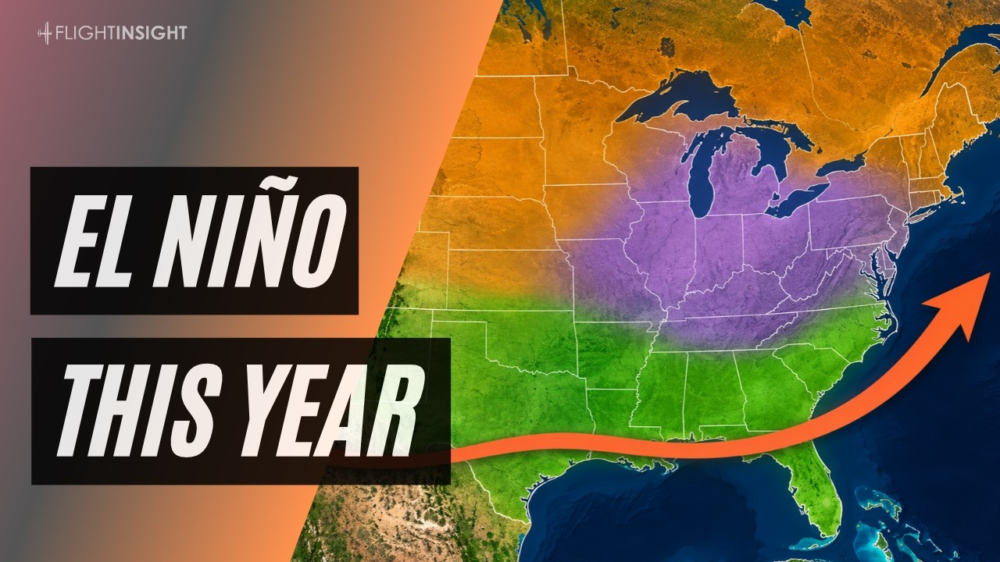

HANGZHOU — Alibaba released Qwen4-Max on Monday, and by the 14:00 UTC snapshot it led the Hacker News front page with 665 points and 310 comments — the day's largest story by both measures, posted at 02:14 UTC.[3] The model takes text and image input, returns text, and carries a 984,000-token context window; the release exposes four configurable reasoning efforts, none through extra-high, which testers put to work within hours.[2][3]
The independent tracker Artificial Analysis scores the model 43 on its Intelligence Index and puts its weighted cost at $3.27 per task, describing it as "above average in intelligence and reasonably priced when comparing to other models of similar price."[2] Readers ran the comparison the other way: one posted that GPT-6.1 Sol at medium effort scores 46 on the same index at an average cost of $0.36, and another noted the score does not surpass Kimi 3.1.[3] The thread's recurring question, in one reader's words: "is the open weights lag widening?"[3]
Simon Willison tested the model's pelican-drawing reliability across all four reasoning efforts and posted the results side by side — a habit that has made his runs a rough release-day acceptance test.[3] The vendor's own release page renders its copy client-side and yielded no readable text to this newsroom's fetcher, so this report leans on the tracker and the thread; between them, the record is not thin.[1][2]
| Intelligence Index (Artificial Analysis) | 43 |
| Cost per index task | $3.27 |
| Context window | 984k tokens |
| GPT-6.1 Sol (medium), per the thread | 46 · $0.36 |
| Front page at snapshot | 665 pts · 310 cmts |
A one-click universal cross-site scripting flaw in uBlock Origin's element picker, disclosed Sunday by Smitty van Bodegom, let a malicious website run arbitrary JavaScript in the context of any site the visitor used — the extension's own trusted filters turned against it.[4] The flaw affects the MV2 Firefox build; uBO Lite, the MV3 version, carried "a similar but less problematic issue." Both are fixed — uBlock Origin 1.75.4 and uBO Lite 2026.1110.1816 carry the patch, version numbers confirmed in the thread.[5]
The attack first had to learn the extension's random per-installation UUID, and a default uBlock filter handed it over: an uAssets rule replaces a fetch for an ad script with a moz-extension:// request, and a page that hooks XMLHttpRequest can read the extension's address out of that hook. From there the attacker embeds the picker invisibly, drives it to compose the filter he wants, and overlays the "Create" button where the victim is about to click.[4]

The writeup's provenance drew as much attention as the bug: the author credits GPT-5.6 Sol with "most of the hard work of finding the issue," which he then verified himself, while Claude wrote most of the proof-of-concept code and he wrote the prose.[4] One reader's wider worry outlasted the specific fix — that extensions must place their interfaces in the page's own DOM, so a password manager's suggestions can leak to the page which accounts you hold.[5]
Steve Blank's "What's Next for Nvidia?" treats Huang's resignation — announced 33 years after he co-founded the company — as a succession problem with a known failure mode, and the thread made it the day's most-discussed story at 414 comments.[12][13] Blank's evidence is his own genre history: Ballmer tripled Microsoft's sales to $78 billion and profits to $22 billion, yet lost search, smartphones, mobile operating systems, media and the cloud; Tim Cook grew Apple's revenue from $108 billion to $416 billion while Vision Pro stumbled, Siri needed Google's help, and the company turned to an insider in September 2026.[12]
The Nvidia-specific numbers are stark: Huang ran roughly 60 direct reports, kept no long-term plans, "didn't believe in succession planning," and anointed no one — leaving the board "in crisis, led by the first chair the company has ever had."[12] The bets an execution CEO would trim first, Blank warns, are exactly Huang's answers to customers becoming competitors: a new chip generation every year, the CUDA moat, and roughly $50 billion invested in the AI labs that run on Nvidia — while Google, Amazon, Microsoft, Meta, OpenAI and Tesla build their own silicon.[12]

The thread argued both sides at volume. Its most-upvoted comment defends Jobs-style self-cannibalization — the iPod disrupting itself again and again — as the trait Nvidia now lacks; others read the week's employee petition to bring Huang back as the board's real problem.[13]
Burger King's X account was not hacked. A Bitly short link in a tweet the chain posted on 24 July 2011 — an advertisement for a restaurant locator — was re-registered by someone else on 15 November and pointed at Wikipedia's list of Nazi concentration camps; a post quoting it passed 2 million views within hours, and the original tweet has since become unavailable.[14] Eighteen minutes earlier, the same fate met a McDonald's link from June 2011, which redirected to the September 11 attacks article.[14]
Bitly confirmed the problem at 19:13 UTC on Saturday, saying an issue had "allowed bad actors to repurpose certain old, inactive links"; it suspended the accounts involved and disabled the affected links, and by 19:22 UTC the Burger King and McDonald's links returned a "Link Deactivated" page.[14] CNN later found redirected links in old posts from Bill Gates, Justin Trudeau, Mike Pence, the FBI and the Department of Defense; of 49 re-created links found in old Trump tweets, all still worked at the researchers' 23:35 UTC check.[14]

The thread's most-upvoted observation was plain surprise that a URL shortener "makes enough money to have a Trust and Safety team"; the more durable point, from another reader, is that outsourced shorteners accrete links for years and fail permanently when an account lapses — which is precisely the mechanism this incident exploited.[15]
MIT has posted the 2026 site for "How To Make (almost) Anything" — MAS.863/4.140/6.9020, held Wednesdays from 1 to 4 in E14-633 — and its week-by-week schedule is the course's thesis in list form: computer-aided design and project management in September, then computer-controlled cutting, embedded programming, 3-D scanning and printing, electronics design and production, computer-controlled machining, and input and output devices into November, with recitations from parametric design to AI agents and edge AI alongside.[6]
The thread split over exactly what such breadth is worth. One reader defended the survey: an overview of "what's even possible" means that when a problem arrives years later, "they'll remember that there was this thing called Y."[7] Another was harsher — people spend entire careers on CAD alone, "yet they somehow crammed it all into part of one lecture which seems to be little more than an enumeration of 50 different CAD tools."[7]
A former teaching assistant offered the practical defense: the weekly pages only guide the lectures, and the course's real record is the project sites students build to document their work — most arrive with minimal electronics, CAD, machining or programming, or specialize in just one of them.[7]
Lemmy and Iggy, two carrion crows, were shown a visual cue and given three seconds to answer; they pecked their decisions in about 235 milliseconds — roughly twice as fast as rhesus monkeys or humans on similar experiments — without giving up accuracy, researchers report in Science, in the first quantification of the neural speed of avian decision-making.[16] "This was a result that we didn't anticipate," said Andreas Nieder, the University of Tübingen neurophysiologist who co-authored the study.[16]
The relevant circuit is the nidopallium caudolaterale, comparable to the primate prefrontal cortex — "the C.E.O. in our brain," in Nieder's phrasing, the seat of planning, working memory and abstract thought.[16] Corvids have separately shown self-recognition, future planning and theory of mind. "It's taken the last 20 years to realize that actually their brain architecture is quite fascinating," said Mike Colombo of the University of Otago, who was not involved in the work.[16]
The thread's most-upvoted comment reached for the long view: intelligence has evolved on Earth at least three times — mammals, corvids, octopuses — and the corvid line got there with a different neuron design and a different brain architecture.[17]
Ductus, a browser tool by Soren Blank, turns handwriting into an installable font: write each of 26 lowercase letters — then capitals, digits and punctuation — on a canvas, and download the result as OTF and WOFF files.[10] The pitch that travels sits under the workflow: the letters are "checked on this computer," never uploaded.[10]

The thread's first request was sample output before the labor of 26 letters; its first bug report was precise — one user's font failed export on a missing segment in a SweepLine tree, "Unable to find segment #17104," leaving the export buttons greyed out.[11] Others asked for photo import instead of letter-by-letter entry, and for more umlauts.[11]
Baron puts "a biplane in every browser": a WebGL flight simulator over seed-generated terrain, with free-flight, cross-country and arcade missions, flap and brake controls, chase or cockpit cameras, and a bail-out key.[20] It runs from a phone — the left thumb steers, a throttle lever sits on the right edge — and installs to the home screen as an app.[20]
The page credits DAI Studio, and the thread took the provenance seriously: one reader wanted the build's prompt graph published alongside the game; another called it "AI slop that is barely the same quality as the first iPhone apps"; a third could not get the throttle back down.[21] The seed field drew a kindred spirit — a reader who had spent the weekend prompt-building a paper-plane simulator in "a very similar visual style."[21]
The video is titled "El Niño Winter 2026–27: What Pilots Should Expect," and it means it: FlightInsight's walkthrough runs from Pacific trade winds and ocean upwelling to the shifted winter jet stream, then turns regional — California mountain crossings, Gulf Coast rain, Northeast winter storms — with implications for IFR conditions, mountain obscuration, freezing levels and icing in flight planning.[18] Posted 13 November, it stood at 42,443 views at press time.[18]

The thread took the climate frame rather than the cockpit one: its most-upvoted comment notes this El Niño is arriving "in the context of a global climate that is warmer than any time in the last 125,000 years," and another reader pointed to Climate Reanalyzer's sea-surface-temperature graphs for the current picture.[19] The video's own caution holds for both audiences: "a milder winter doesn't necessarily mean easier flying."[18]
Bruce Röttgers walks through hosting your own world map on Protomaps' PMTiles format: a single archive file served over HTTP Range requests, so a storage bucket plus a CDN is the whole infrastructure.[8] The full 139-gigabyte planet extract, replicated to five continents on Bunny.net, runs about $5 a month in storage; loading a map of Europe and zooming into a city moves about 5 megabytes, priced near $0.00005 — roughly $0.05 per thousand map loads, against Mapbox's $5 per thousand once its free tier is exhausted.[8]
The thread added the usual caveats and companions: high-resolution satellite imagery is a different order of problem — one reader stopped his North American mosaic at zoom 17, with global coverage reaching into the hundreds of terabytes; OpenFreeMap offers a free hosted alternative with no view limits; and Tilemaker pull requests now in review could soon cut a planet build to under five minutes.[9]
FOUND: 49 short links, re-created years after the tweets that carried them, all resolving at the 23:35 UTC check. Bitly is disabling them.[14]
STORAGE, ONE FILE: 139 GB planet, HTTP Range access, about $5 a month with five-way replication. Pick-up: any storage bucket.[8]
SITUATION VACANT: chief executive. About 60 direct reports; the last one anointed no successor and left the board the day he left the job.[12]
The day in one line. Qwen4-Max takes the day at 665 points, uBlock Origin patches a one-click universal XSS, and a 2011 short link outlives the account that made it.
| Fresh stories | 10 |
| Follow-ups | 0 |
| Carried in digest | 0 |
| Combined points | 3,726 |
| Combined comments | 1,603 |
| Top of the page | Qwen4-Max · 665 |
| Most-discussed | Nvidia post-mortem · 414 |
| Snapshot | 14:00 UTC · 08:00 CST |
The "hijack" was a re-registration. The thread's headline says old Bitly links "are being hijacked"; the report underneath is specific that no account was hacked — the brands' original short links lapsed and were re-registered by third parties. Bitly's own word is "repurposed," and its remedy is account suspension and link disabling, not credential resets.[14]
"Universal," scoped. The uBlock Origin flaw is universal in effect but Firefox-MV2 in scope: the writeup names the MV2 build as the vulnerable one, with uBO Lite (MV3) carrying "a similar but less problematic issue." Both are fixed — 1.75.4 and 2026.1110.1816 respectively.[4]
"Max," measured. The model's name suggests the top of the range; the Artificial Analysis Intelligence Index puts it at 43, at $3.27 per task, with GPT-6.1 Sol at medium effort cited in-thread at 46 for $0.36. "Above average," in the tracker's phrasing, is accurate; frontier is not.[2][3]
A short explainer, aimed at cockpits. The thread called it "a short explainer on how El Niño works." The video's own title is "El Niño Winter 2026–27: What Pilots Should Expect," and the mechanism is the setup for a regional flying outlook — IFR, icing, freezing levels — rather than the main event.[18]
Ten fresh stories led the morning: Qwen4-Max carried the top score while the thread carried the receipts; Steve Blank's Nvidia post-mortem drew the day's deepest comment pool; and uBlock Origin shipped a fix worth installing before lunch. The paper's one blank is the Qwen release page itself, which renders no readable copy to the fetcher — the lead is reported from the independent tracker and the thread instead. No follow-ups, no digest; the front page turned over completely.
Methodology: snapshot of the Hacker News front page taken 16 November 2026, 14:00 UTC (08:00 US Central — Morning Edition), via the Algolia HN Search API (50 candidates requested, 30 returned). Points and comment counts are as of the snapshot and move after publication. Deduplication ran against the previous four editions (48 hours): all ten stories are fresh — no follow-ups, no digest, no second wire. Articles were fetched with a browser user-agent; qwen.ai's release page renders its copy client-side and yielded no text, YouTube served no duration field for the embedded video, and the Times article was read up to its meter — each omission is noted where it occurs. Scores in bylines are snapshot values; the box score's axis runs to 700 points.